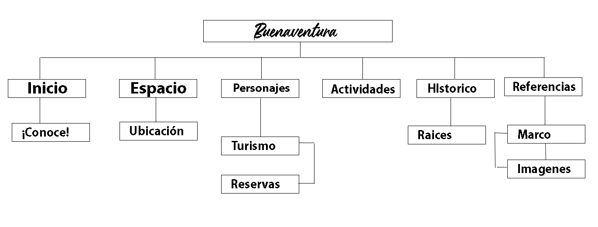

Referencias
Marco De Referencias
-INICIO: disfruta, conoce y aprende del hermoso territorio de buenaventura.
-ESPACIO: un lugar de magia y encanto
-PERSONAJES: respresentantes de la historia de buenaventura
-ACTIVIDADES: El turismo una ventana a la belleza de la naturaleza y la economía
-HISTÓRICO: nuestra raíces y evolución a través del tiempo
Mapa de navegación
Referencia de las Imagenes
• www.eltiempo.com/files/article_main/uploads/2018/04/06/5ac84928eab04.jpeg
• www.eltiempo.com/files/multi_especiales_modulares/uploads/2021/02/18/602f1089d2349.jpeg
• www.buenaventura.gov.co/media/img/20170427_cultural
• https://cdn.colombia.com/images/v2/colombia-info/folclor/region-pacifica/baile-currulao-800
• www.bacanika.com/images/HISTORIAS/CRONICAS/CHOCO/Buenaventura11
• www.eltiempo.com/files/image_640_428/uploads/2017/11/13/5a0a356c5aeb9g
• www.uff.travel/region/24/chontaduro-fuente-flickr2-800x0
• https://media-cdn.tripadvisor.com/media/photo-s/09/c0/22/ce/catedral-de-buenaventura
• i.pinimg.com/originals/c4/d8/83/c4d883526991f9a164a2adb0638bf20f
• upload.wikimedia.org/wikipedia/commons/5/53/La_Bocana_Port
• i.pinimg.com/originals/28/66/93/286693d84c19692906bf467419bd4fa8
• www.defensoria.gov.co/images/cms-image-000005593
• viajandox.com.co/uploads/Reserva%20Natural%20San%20Cipriano_3
• co.toluna.com/dpolls_images/2019/11/29/16c4fa38-14b8-4623-b303-39299aa1740a_x365
• media-cdn.tripadvisor.com/media/photo-s/0e/4b/cd/6e/cuando-la-marea-es-baja.jpg
• media-cdn.tripadvisor.com/media/photo-s/02/ac/1f/db/filename-9-muelle-juanchaco
• 7travel.co/assets/img/packages/pasadia-cascada-la-sierpe-buenaventura
• www.lasrutasdeisa.com/wp-content/uploads/2020/04/IMG_1239-scaled
-Estudiante: Daniel Vela Molina